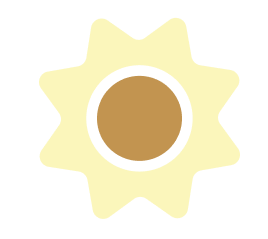
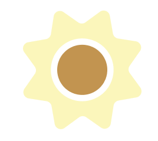

The impact of species extinction
According to the United Nations biodiversity is declining faster now than any other time in history.
Biodiversity is the foundation of many of our environments natural systems.
When those systems become off balanced it impacts us all.
Human activities, such as record levels of deforestation, causes habitat destruction and the loss of species.
What people may not realize is that when species are displaced they end up in contact with humans more often.
This increases the risks of exposure to "zoonotic spillover" - when a disease jumps from animals to humans.
Right now, more than 75% of infectious diseases in humans originated from animals.
Species loss also directly relates to agriculture.
Since food webs are interdependant, the loss of one species can cause the loss of another.
If the loss of a species or direct interference threatend the bee population for example, as said by the UN food and Agricultural Organization, our argiculture could be completely upended.
Nature isn't just the foundation of our agriculture, it also drives our healthcare industry.
Many of our current medicines were developed from nature.
Species loss and Habitat destruction could halt medical innovation as 70% of all cancer drugs are natural or bio-inspired.
What can be done
Conservation efforts are essential.
Restoring biodiversity could slow down climate change by aiding in carbon sequestration from the Earth's atmosphere.
Besides carbon capture, some ecosystems can act as shields during storm surges and flooding.
Islands play an important role in biodiversity as they host 20% of the Earth's species with only 4% of its surface area.
Islands are also where 80% of known speice extinction occur.
A big part of conservation involves supporting sustainable argiculture, fishing, shipping, and land use.
It was found that croplands are expanding 58 times faster today than they did 20 years ago.
This is mainly used to feed livestock and support an intense demand for meat.
Overishing, ocean acidification, and plastic pollution are just as harmful.
One of the essential parts of conservation involves respecting indigenous knowledge and rights.
Indigenous groups have historically been environmental stewards.
Research has proved that when indingenous groups control the land biodiversity flourishes, yet very few contries recognize indigenous land rights.


 
